CBTis 16
-
ESPECIALIDADES
-
MISIÓN Y VISIÓN
-
INSTALACIONES
-
UBICACIÓN
-
ACTIVIDADES
-
BECAS
-
PLATAFORMAS
-
HISTORIA
-
DATOS DEL PROGRAMADOR
¿Que es DGETI?
La Dirección General de Educación Tecnológica Industrial (DGETI) es una dependencia adscrita a la Subsecretaría de Educación Media Superior (SEMS) que ofrece el servicio educativo de nivel medio superior tecnológico. Actualmente, la DGETI es la institución de educación media superior tecnológica más grande del país, con una infraestructura física de 1,366 Centros Educativos a Nivel Nacional, de los cuales, 168 son Centros de Estudios Tecnológico Industriales y de Servicios (CETIS) y 271 Centros de Bachillerato Tecnológico Industrial y de Servicios (CBTIS).

Proyecto Final
Joselyne Muñoz Martínez
ESPECIALIDADES
TÉCNICO EN MECÁNICA INDUSTRIAL
Profesionista que da mantenimiento a los sistemas de transmisión de potencia utilizando las máquinas herramientas convencionales, de control numérico, máquinas de soldar con arco eléctrico y oxigas auxiliándose de los procesos de ajuste de piezas mecánicas.
COMPETENCIAS PROFESIONALES:
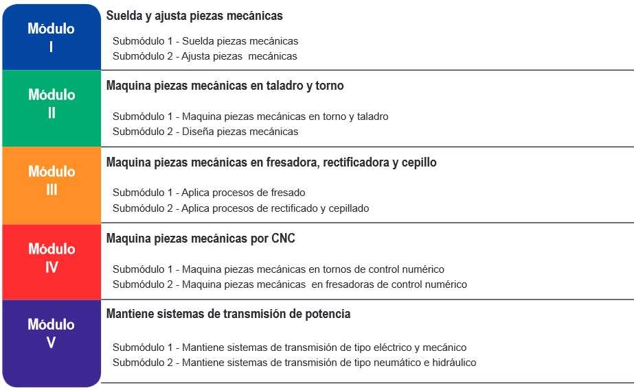MAPA CURRICULAR

PERFIL DE EGRESO
Durante el proceso de formación de los cinco módulos, el estudiante desarrollará o reforzará las siguientes competencias profesionales, correspondientes al Técnico en Mecánica Industrial: Suelda y ajusta piezas mecánicas. Maquina piezas mecánicas en talador y torno. Maquina piezas mecánicas en fresadora, rectificadora y cepillo. Maquina piezas mecánicas por CNC. Mantiene sistemas de transmisión de potencia.
OPORTUNIDADES DE INSERCIÓN LABORAL.
Industrias de transformación y procesos como: Textiles, del plástico, petroleras, metalmecánica, automotriz, pesqueras, mineras, siderúrgicas, agrícolas, alimenticia, química, de muebles, forestal, papelera, gráfica y en general todo tipo de industria de la producción y manufacturera que utilice maquinaria entre otras.
TÉCNICO EN ELECTRICIDAD
La carrera de Técnico en Electricidad permite al estudiante sustentar la demanda de ocupación de Técnicos Electricistas en el sector productivo y de servicios, capaz de diseñar y realizar instalaciones eléctricas residenciales y comerciales, así como proporcionar mantenimiento a máquinas eléctricas.
COMPETENCIAS PROFESIONALES:

MAPA CURRICULAR

PERFIL DE EGRESO
Durante el proceso de formación de los cinco módulos, el estudiante desarrollará o reforzará las siguientes competencias profesionales, correspondientes al Técnico en Electricidad. Desarrolla instalaciones eléctricas residenciales y comerciales. Mantiene los motores y generadores de CA y CC. Mantiene en operación los circuitos de control electromagnético y electrónico. Mantiene los sistemas de iluminación y de energía renovable. Mantiene instalaciones eléctricas de media y baja tensión.
OPORTUNIDADES DE INSERCIÓN LABORAL.
Todas estas competencias posibilitan al egresado su incorporación al mundo laboral o desarrollar procesos productivos independientes, de acuerdo con sus intereses profesionales o las necesidades en su entorno social.
TÉCNICO EN PROGRAMACIÓN
Persona con conocimientos, habilidades y actitudes, capaz de ingresar a empresas de desarrollo de software, diseño gráfico, mantenimiento, outsourcing.
COMPETENCIAS PROFESIONALES:
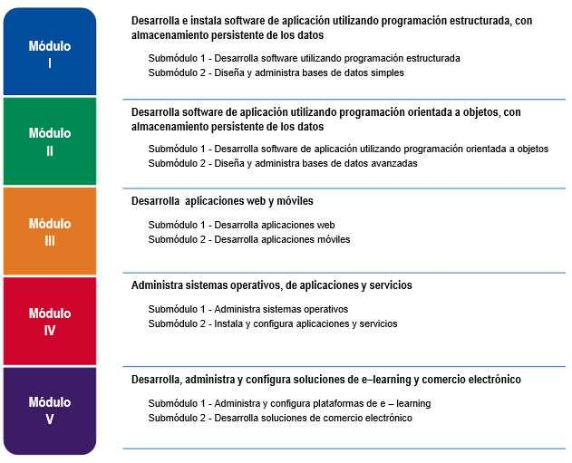MAPA CURRICULAR

PERFIL DE EGRESO
La formación que ofrece la carrera de Técnico en programación permite al egresado, a través de la articulación de saberes de diversos campos, realizar actividades dirigidas a la: Instalación y desarrollo de software de aplicación utilizando programación estructurada y orientada a objetos en ambientes web y móviles, con almacenamiento persistente de datos. Así como la configuración y administración de plataforma e-learning y Comercio electrónico.
OPORTUNIDADES DE INSERCIÓN LABORAL.
Desarrolladores de software Analistas de sistemas Analista de programas de cómputo Programador de sistemas de cómputo Edición de software y edición de software integrada con la reproducción Escuelas de computación del sector privado Servicios de diseño de sistemas de cómputo y servicios relacionados Escuelas de computación del sector público
TÉCNICO EN LOGISTICA
Ofrece las competencias profesionales que permiten al estudiante realizar actividades dirigidas a la administración de bienes, planificando los suministros destinados al almacenamiento de manera manual y electrónica, la organización de los nodos logísticos para el transporte de mercancías, así como proveer los servicios y atención al cliente sobre los movimientos y los costos de la cadena logística.
COMPETENCIAS PROFESIONALES:

MAPA CURRICULAR

PERFIL DE EGRESO
Durante el proceso de formación de los cinco módulos, el estudiante desarrollara o reforzará las siguientes competencias profesionales: Supervisa el proceso de suministrio de bienes. Apoya el proceso de administración al servicio de almacenaje de bienes. Organiza el transporte de mercancías. Proveve servicio de atencion al cliente sbre los movimientos de logistica. Organiza los costos de la cadena logística y de las competencias de productividad y empleabilidad: Atencion al proceso Planeación y organización Ética profesional Comunicación efectiva Trabajo en equipo Atención al cliente Relaciones interpersonales
OPORTUNIDADES DE INSERCIÓN LABORAL
Nuestro país presenta una amplia diversidad de procesos de producción, desde los que utilizan tecnología moderna, hasta sistemas tradicionales; este hecho contribuye a diversificar las ocupaciones, los Comités interinstitucionales de Formación Profesional decidieron utilizar los siguientes: Sectores industriales, comerciales y de servicios, públicos o privados: Escuelas, constructoras, fábricas, centros comerciales, hospitales, inmobiliarias, hoteles, instituciones de crédito, despachos contables y tiendas de autoservicio. Autoempleo
Proyecto Final,MMJ
MISIÓN Y VISIÓN DEL PLANTEL
MISIÓN
Formar personas con conocimientos tecnológicos en las áreas industrial, comercial y de servicios, a través de la preparación de profesionales técnicos y bachilleres, con el fin de contribuir al desarrollo sustentable del país.
VISIÓN
Ser una institución que proporcione una formación integral y pertinente de acuerdo a las exigencias derivadas de la competitividad mundial y el entorno y vocación local, además de tener la flexibilidad para satisfacer los intereses, aspiraciones y posibilidades de la población que demanda este nivel educativo en nuestro plantel.
Proyecto Final,MMJ
INSTALACIONES
CBTis 16 cuenta con grandes instalaciones , como son areas verdes, cancha de basquetbol,cancha de futbol rapido, campo de futbol, tres amplios talleres para las especialidades de electricidad y mecanica industrial, dos laboratorios de computo, entre otros espacios en los que el alumno puede sentirse comodo al momento de cursar la preparatoria .
- 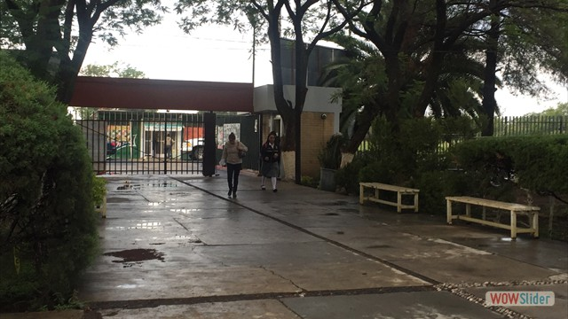
- 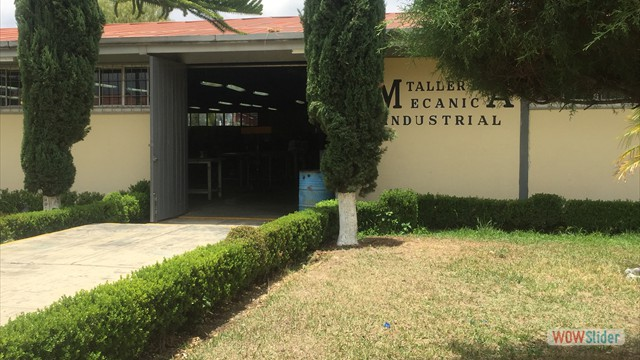
- 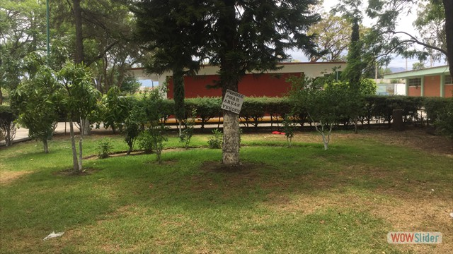
- 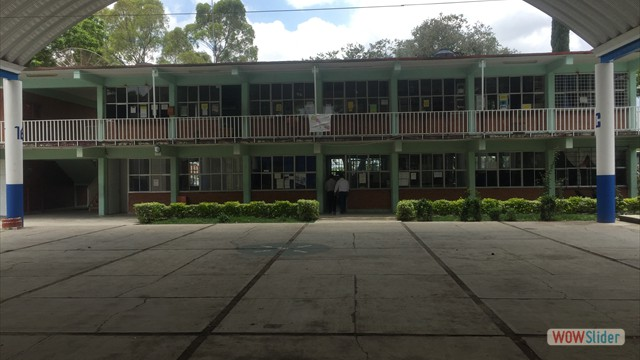
- 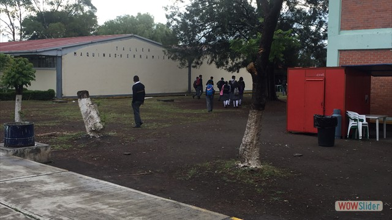
- 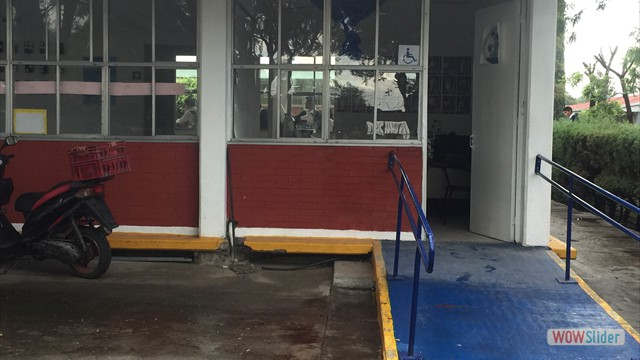
- 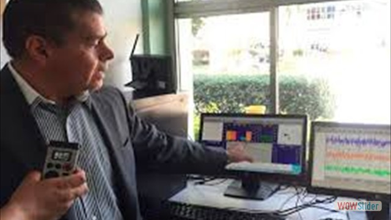
- 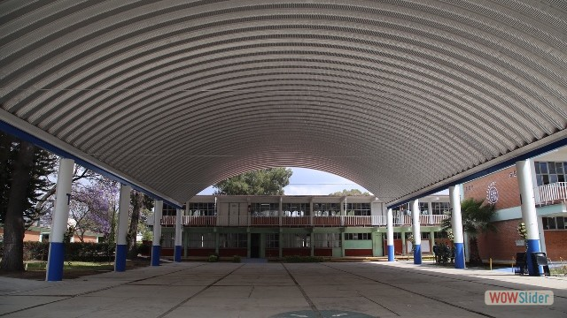
- 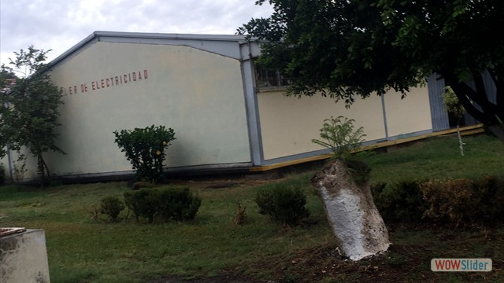
- 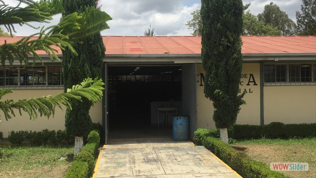
Proyecto Final,MMJ
UBICACIÓN DEL PLANTEL
Nos encontramos ubicados en Fray Bartolomé de las Casas #2001, Ricardo Flores Magón, 74240
Contactanos al telefono: 01 244 446 2961
Proyecto Final,MMJ
ACTIVIDADES EXTRAESCOLARES
En este plantel se manejan distintas actividades en las que puedes desarrollar tus habilidades.

VOLEIBOL
¡Se parte de las selecciones!

Al formar parte de algunas de nuestras actividades podras participar en nuestros eventos como:
Proyecto Final,MMJ
BECAS
En esta sección se describen los diferentes tipos de becas que otorga la Secretaría de Educación Pública (SEP) a través de la Subsecretaría de Educación Media Superior (SEMS)
GOBIERNO FEDERAL
*EXCELENCIA PROMEDIO
*INGRESO
*PERMANENCIA
*SALARIO PRÁCTICAS PROFESIONALES
*CONTRA EL ABANDONO ESCOLAR
GOBIERNO ESTATAL
*OPORTUNIDADES
Proyecto Final,MMJ
PLATAFORMAS EDUCATIVAS
Se utilizan distinas plataformas para obtener un mejor aprendizaje en el alumno.
Algunas de estas son:
*KHAN ACADEMY
*DUOLINGO
*MIL AULAS
EDMODO
Proyecto Final,MMJ
HISTORIA DEL PLANTEL
RESEÑA HISTORICA DEL C.B.T.i.s. No. 16
El presente trabajo, tiene como finalidad conocer aspectos sobre la evolución del C.B.T.i.s. No. 16 para lo cual se muestran algunas de sus raíces históricas. El día 08 de Agosto, el comité que representa la Federación de obreros y Campesinos de la región de Atlixco Pué; hizo entrega al Ingeniero Estrada Cuesta en representación del C.A.P.E.C.E., un terreno de 5966.38 metros cuadrados de superficie para la construcción de la Escuela Técnica Industrial No.46 de esta ciudad, procediendo a su edificación. El día 25 de febrero de 1962, en una de las oficinas que forman la H. Cámara de Trabajo C.R.O.M. de Atlixco, empezó a laborar la Dirección de la E.T.I. No. 46., fungiendo como primer Director el C. Ing. Francisco Linares Jiménez, auxiliado por el C. Tec. Oscar Rodríguez Grijalva y el personal administrativo formado por las C. C. Eva Judith Rosas Bonillas, Ma. Cristina Fernández Sosa, Carolina Rosas Zarate y el C. Juan Apatenco Fernández. A los quince días después se hizo el traslado al edificio que ocupa dicha escuela, la cual constaba de 5 salones de clase, 5 talleres y 2 salones de dibujo. El día 1 de Abril de 1962, se iniciaron las labores con tres grupos de secundaria con las especialidades de ajuste de banco y maquinas, herramientas, maquinas de combustión interna, modas, radio y T.V., ELECTRONICA, ELECTRICIDAD Y EQUIPO AGRICOLA, además hubo tres grupos de Preparatoria Técnica Elemental en las especialidad de; maquinas de combustión interna, electricidad, ajuste de banco, equipo agrícola , haciendo un total de 169 alumnos que, en su mayoría eran campesinos y trabajadores de las diferentes fabricas de la región. Los maestros fundadores fueron: Prof. Carlos Castillo Rodríguez Profa. María de la Luz Munive Dávila Lic. David Marroquín Profa. Esperanza Villegas Cortez Dr. Salvador Esperón Unzueta Prof. Pablo Barrera Prof. Luis Martínez Matamoros Prof. Marco Antonio Morales Arador Prof. Sirvió Tulio Guillen Burguete Prof. Fernando Domínguez Almeida Prof. Lorenzo Morales Prof. Elías Anderica Díaz Se inauguro oficialización el 18 de noviembre de 1963, a cargo del entonces Presidente de la Republica Lic. Adolfo López Mateos, llevando el nombre de “Escuela Técnica Industrial José Ma. Morelos y Pavón”. Hasta 1964, empezó a funcionarla prefectura siendo el primer prefecto el C. Sergio Linares Casanova, agregándose posteriormente el C. Juan de Dios F.C. (1965). En ese mismo año se lleva a cabo la construcción del edificio de Vocacional, que consta de cuatro aulas, tres laboratorios y un salón de dibujo y tribunas. También en ese año Enero(1965), se inicia el primer grupo de Preparatoria Técnica, siendo maestros fundadores como Director el Ing. Francisco Linares Jiménez, así como docentes: Prof. Rubén Nava Arias Ing. Miguel Lima Torres Ing. Alfredo Lobato Contreras Ing. Armando Pérez Barrera Lic. Armando Guerra Prof. Felipe Cervantes Irigoyen Prof. Pablo Barrera Ing. Miguel Zaldívar Gutiérrez El 30 de Diciembre de 1966, deja la dirección del plantel el Ing. Francisco Linares, funcionario de la escuela con cinco grupo de primer año, tres de segundo y dos de tercero de secundaria Técnica y dos de primero y uno de segundo de Preparatoria Técnica, además un grupo de preparatoria Técnica Elemental. A la salida de Francisco Linares surgen constantes cambios en la Dirección en el siguiente orden: Ing. Rodolfo Bazán duración 2 meses Ing. Mario Landeros duración 12 meses Ing. Armando de Anda Ing. Hugo Carreto Gonzales duración 5 meses Ing. Jaime Zaragoza Bueno duración 3 meses En 1967, empezó a funcionar la biblioteca oficialmente con un total de 250 libros, quedando al frente de la misma la C. Graciela Ramos Castro. A finales del año 1967, se viven los años más difíciles de la Institución en su administración y su prestigio, debido a políticas internas. Aproximadamente en Febrero de 1968, se hizo cargo de la Dirección de la escuela el C. Prof. Francisco Luna Pérez, quedando como subdirección el Ing. Jaime Zaragoza Bueno. En este mismo año se inician los trámites para la construcción de dos locales adecuados para los talleres de ajuste de banco y mecánica automotriz procediendo a su edificación; se agregan además a la prefectura tres personas más que son: los C.C. Sebastián Alonso Luna, Salvador Jiménez Campos y Luis Barranco Arezca. Es notable el incremento del equipo de laboratorio y talleres durante los años de 1968 y 1969. En el año de 1970, ocupa el cargo de Subdirector el C. Antonio Serrano Alonso, en consecuencia el C. Jaime Zaragoza Bueno, paso a ser Subdirector Técnico (provisional por unos días). También se inicio el Departamento de Orientación Vocacional, a cargo de la C. Aurora Trivera, y se agrega el primer prefecto vespertino el C. Natalio Ramírez. En el año de 1972, se amplían los talleres de Electrónica y Electricidad, cambiando las oficinas al lugar que ocupan actualmente quedando en su lugar la biblioteca. En este año se agrega a la prefectura al C. Ricardo del Moral Ramírez. En el periodo 72-73, cambia el nombre de la escuela de E.T.I. No. 46 a C.E.T. No. 46 y el periodo 73-74 por el de C.E.C.Y.T. No. 46. En 1973, se construyo un local para el taller de mantenimiento de la escuela. El 2 de febrero de 1976, la D.G.E.T.I., nombra como coordinación de Actividades Tecnológicas al C. Ricardo Cano Castellanos y en esta misma fecha es nombrado como coordinador de Actividades Académicas al C. Juan Carlos Jiménez. En 1976, se construye una sala audiovisual y un laboratorio de Idiomas, en este año es nombrado como coordinador de Actividades Académicas de la E.T.I.No.46 en forma oficial, y del C.E.C.Y.T. No. 46 en forma provisional el Ing. Miguel Zaldívar Gutiérrez. Durante el periodo de Francisco Luna Pérez, se recupera la institución de los problemas que le habían deteriorado. Alcanzando un alto prestigio en la región. A finales de 1976 el Prof. Francisco Luna Pérez es ascendido por lo que ocupa la Dirección de la Institución el C. Tec. Jorge Iván Alberto Solís. En el periodo de 1976-1977, se hace la separación oficial de la vocacional como C.E.C.Y.T. No.46 y la secundaria como E.T.I. No. 160. Se incrementa la prefectura con los ciudadanos, Martin Domínguez, Carlos Orduña, Raúl García González y deja de funcionar el departamento de Orientación Vocacional, debido a cambio de estructura educativa. En 1977, es ratificado en el cargo de jefe de Servicios Docentes el Ing. Miguel Zaldívar Gutiérrez y como coordinador de talleres y laboratorios el Ing. Rodolfo Clemente Mendoza. El mes de enero de n1978, deja la dirección del plantel le Tec. Jorge Iván Alberto Solís, para ocuparlo el Ing. Eduardo Rodríguez Serrano. El día 28 de marzo de 1978, deja la dirección del Plantel el Tec. Jorge Iván Alberto Solís, para ocuparlo el Ing. Eduardo Rodríguez Serrano. El día 28 de marzo de 1978, deja el puesto de la Coordinación el Ing. Clemente Mendoza y al 03 de Abril del mismo año deja la jefatura de servicios docentes el Ing. Miguel Zaldívar Gutiérrez, ocupándola provisionalmente el Ing. Alberto Francisco Meléndez Tecuanhuey. En agosto de 1978, dejo a la dirección de plantel el Ing. Eduardo Rodríguez Serrano. En septiembre de 1978, ocupo la Dirección del plantel el Ing. Jorge Gonzales Méndez, durante este periodo, se incrementaron los grupos del turno vespertino. En septiembre de 1978, ocupo la jefatura de servicios docentes el Ing. José Couto Jimarez y en octubre de 1979 ocupo la oficina de coordinación con el sector Productivo el Ing. Jesús Matías López Avalos. En octubre de 1980, dejo la dirección del plantel el Ing. Jorge González Méndez, y el 12 de enero de 1981 la ocupo el Ing. Raúl García y Ambriz. En noviembre de 1981, fue designado subdirector Académico por la D.G.E.T.I. el Ing. Alberto Francisco Meléndez Tecaanhuey. Fue en esos periodos cuando dieron fin a los tramites iniciados por un grupo de maestros logrando la construcción del edificio propio del que a partir de septiembre de 1981, llevaría el nombre de Centro de Bachillerato Tecnológico Industrial y de Servicios No. 16 (C.B.T.i.s. No. 16).